betahat_sebetahat <- get(load("../output/death_time_cor_nonmash.rda"))
sample_attributes <- get(load("../output/sample_attributes_filtered.rda"))
person_tissue_genes <- get(load("../output/person_tissue_genes_voom.rda"))betahat_mat <- betahat_sebetahat$betahat
sebetahat_mat <- betahat_sebetahat$sebetahat
pval_mat <- betahat_sebetahat$pval
rsquare_mat <- betahat_sebetahat$rsquaretmat <- betahat_mat/sebetahat_mat
abs_tmat <- abs(tmat)
column_sum_1 <- apply(abs_tmat, 2, function(x) return(quantile(x, 0.7)))names <- dimnames(person_tissue_genes)[[3]][which(column_sum_1 > 1.8)]
write.table(names, file = "../utilities/circadian_genes.txt", quote = FALSE, row.names = FALSE, col.names = FALSE)
ensembl = biomaRt::useMart("ensembl", dataset="hsapiens_gene_ensembl", host="www.ensembl.org")
res = biomaRt::getBM(attributes = c("chromosome_name", "ensembl_gene_id", "external_gene_name", "description"), filters = c("ensembl_gene_id"), values = names,
mart = ensembl)
out <- mygene::queryMany(names, scopes="ensembl.gene", fields=c("name", "summary"), species="human");## Finished
## Pass returnall=TRUE to return lists of duplicate or missing query terms.cbind.data.frame(out[[4]], out[[5]])## out[[4]]
## 1 PITPNM2 belongs to a family of membrane-associated phosphatidylinositol transfer domain-containing proteins that share homology with the Drosophila retinal degeneration B (rdgB) protein (Ocaka et al., 2005 [PubMed 15627748]).
## 2 This gene encodes a member of a subfamily of the adenosine deaminase protein family. The encoded protein is one of two adenosine deaminases found in humans, which regulate levels of the signaling molecule, adenosine. The encoded protein is secreted from monocytes undergoing differentiation and may regulate cell proliferation and differentiation. This gene may be responsible for some of the phenotypic features associated with cat eye syndrome. Alternative splicing results in multiple transcript variants.
## 3 The protein encoded by this gene is involved in the synthesis of tetrahydrofolate (THF) in the mitochondrion. THF is important in the de novo synthesis of purines and thymidylate and in the regeneration of methionine from homocysteine. Several transcript variants encoding different isoforms have been found for this gene.
## 4 This gene is a member of the Period family of genes and is expressed in a circadian pattern in the suprachiasmatic nucleus, the primary circadian pacemaker in the mammalian brain. Genes in this family encode components of the circadian rhythms of locomotor activity, metabolism, and behavior. This gene is upregulated by CLOCK/ARNTL heterodimers but then represses this upregulation in a feedback loop using PER/CRY heterodimers to interact with CLOCK/ARNTL. Polymorphisms in this gene may increase the risk of getting certain cancers and have been linked to sleep disorders.
## 5 The protein encoded by this gene is a basic helix-loop-helix protein that forms a heterodimer with CLOCK. This heterodimer binds E-box enhancer elements upstream of Period (PER1, PER2, PER3) and Cryptochrome (CRY1, CRY2) genes and activates transcription of these genes. PER and CRY proteins heterodimerize and repress their own transcription by interacting in a feedback loop with CLOCK/ARNTL complexes. Defects in this gene have been linked to infertility, problems with gluconeogenesis and lipogenesis, and altered sleep patterns. Several transcript variants encoding different isoforms have been found for this gene.
## 6 This gene encodes a member of a subfamily of basic helix-loop-helix transcription repressors that have homology to the Drosophila enhancer of split genes. Members of this gene family regulate cell differentiation in numerous cell types. The protein encoded by this gene functions as a cofactor, interacting with other transcription factors through a tetrapeptide domain in its C-terminus. Alternatively spliced transcript variants encoding different isoforms have been described.
## 7 Malic enzyme catalyzes the oxidative decarboxylation of malate to pyruvate using either NAD+ or NADP+ as a cofactor. Mammalian tissues contain 3 distinct isoforms of malic enzyme: a cytosolic NADP(+)-dependent isoform, a mitochondrial NADP(+)-dependent isoform, and a mitochondrial NAD(+)-dependent isoform. This gene encodes a mitochondrial NADP(+)-dependent isoform. Multiple alternatively spliced transcript variants have been found for this gene, but the biological validity of some variants has not been determined.
## 8 <NA>
## 9 <NA>
## 10 This gene encodes a zinc metalloaminopeptidase of the M1 protease family that resides in the endoplasmic reticulum and functions in N-terminal trimming antigenic epitopes for presentation by major histocompatibility complex (MHC) class I molecules. Certain mutations in this gene are associated with the inflammatory arthritis syndrome ankylosing spondylitis and pre-eclampsia. This gene is located adjacent to a closely related aminopeptidase gene on chromosome 5.
## 11 Autophagy is the process by which endogenous proteins and damaged organelles are destroyed intracellularly. Autophagy is postulated to be essential for cell homeostasis and cell remodeling during differentiation, metamorphosis, non-apoptotic cell death, and aging. Reduced levels of autophagy have been described in some malignant tumors, and a role for autophagy in controlling the unregulated cell growth linked to cancer has been proposed. This gene encodes a member of the autophagin protein family. The encoded protein is also designated as a member of the C-54 family of cysteine proteases. Alternate transcriptional splice variants, encoding different isoforms, have been characterized.
## 12 <NA>
## 13 This gene encodes a member of the nuclear hormone receptor family, specifically the NR1 subfamily of receptors. The encoded protein functions as a transcriptional repressor and may play a role in circadian rhythms and carbohydrate and lipid metabolism. Alternatively spliced transcript variants have been described.
## 14 This gene encodes one of the two alpha chains of type XI collagen, a minor fibrillar collagen. It is located on chromosome 6 very close to but separate from the gene for retinoid X receptor beta. Type XI collagen is a heterotrimer but the third alpha chain is a post-translationally modified alpha 1 type II chain. Proteolytic processing of this type XI chain produces PARP, a proline/arginine-rich protein that is an amino terminal domain. Mutations in this gene are associated with type III Stickler syndrome, otospondylomegaepiphyseal dysplasia (OSMED syndrome), Weissenbacher-Zweymuller syndrome, autosomal dominant non-syndromic sensorineural type 13 deafness (DFNA13), and autosomal recessive non-syndromic sensorineural type 53 deafness (DFNB53). Alternative splicing results in multiple transcript variants. A related pseudogene is located nearby on chromosome 6.
## 15 Calcium-dependent membrane-binding proteins may regulate molecular events at the interface of the cell membrane and cytoplasm. This gene encodes a calcium-dependent protein that also contains two N-terminal type II C2 domains and an integrin A domain-like sequence in the C-terminus. However, the encoded protein does not contain a predicted signal sequence or transmembrane domains. This protein has a broad tissue distribution and it may function in membrane trafficking. This gene and the gene for RNA binding motif protein 12 overlap at map location 20q11.21. Alternate splicing results in multiple transcript variants encoding different proteins.
## 16 <NA>
## 17 <NA>
## 18 <NA>
## 19 <NA>
## 20 <NA>
## out[[5]]
## 1 ENSG00000090975
## 2 ENSG00000093072
## 3 ENSG00000120254
## 4 ENSG00000132326
## 5 ENSG00000133794
## 6 ENSG00000144485
## 7 ENSG00000151376
## 8 ENSG00000158717
## 9 ENSG00000159208
## 10 ENSG00000164308
## 11 ENSG00000168397
## 12 ENSG00000171806
## 13 ENSG00000174738
## 14 ENSG00000204248
## 15 ENSG00000214078
## 16 ENSG00000214706
## 17 ENSG00000250379
## 18 ENSG00000255513
## 19 ENSG00000270028
## 20 ENSG00000272782names## [1] "ENSG00000090975" "ENSG00000093072" "ENSG00000120254"
## [4] "ENSG00000132326" "ENSG00000133794" "ENSG00000144485"
## [7] "ENSG00000151376" "ENSG00000158717" "ENSG00000159208"
## [10] "ENSG00000164308" "ENSG00000168397" "ENSG00000171806"
## [13] "ENSG00000174738" "ENSG00000204248" "ENSG00000214078"
## [16] "ENSG00000214706" "ENSG00000250379" "ENSG00000255513"
## [19] "ENSG00000270028" "ENSG00000272782"The pathway data we read.
circadian <- read.delim("../utilities/circadian_pathways.tab")
cbind.data.frame(circadian$q.value, circadian$pathway, circadian$members_input_overlap_geneids)## circadian$q.value circadian$pathway
## 1 7.464974e-05 Exercise-induced Circadian Regulation
## 2 1.543851e-04 Circadian Clock
## 3 2.615618e-04 Circadian rhythm pathway
## 4 2.615618e-04 BMAL1:CLOCK,NPAS2 activates circadian gene expression
## 5 4.932426e-04 Melatonin metabolism and effects
## 6 4.932426e-04 Circadian rhythm - Homo sapiens (human)
## 7 6.107379e-04 Circadian Clock
## 8 1.354877e-02 Herpes simplex infection - Homo sapiens (human)
## circadian$members_input_overlap_geneids
## 1 8864; 406; 9975
## 2 8864; 406
## 3 8864; 406
## 4 8864; 406
## 5 8864; 406
## 6 406; 8864
## 7 8864; 406
## 8 8864; 406pathway2 <- read.delim("../utilities/circadian_pathways.tab")
if(length(which(pathway2$q.value < 0.05)) > 2){
pathway2 <- pathway2[which(pathway2$q.value < 0.05),]
}
maxpath = 75
pathway <- pathway2[1:min(maxpath, dim(pathway2)[1]), ]
ensembl_genes <- pathway$members_input_overlap
pathway_list_genes <- sapply(ensembl_genes, function(x) return(strsplit(as.character(x), "; ")))
all_genes <- Reduce(union, pathway_list_genes)
pathway_mat <- matrix(0, length(pathway_list_genes), length(all_genes))
for(l in 1:dim(pathway_mat)[1]){
pathway_mat[l, match(pathway_list_genes[[l]], all_genes)] <- 1
}
pathway_bimat <- (pathway_mat)%*%t(pathway_mat)
pathway_bimat_prop <- diag(1/sqrt(diag(pathway_bimat)), dim(pathway_bimat)[1]) %*% pathway_bimat %*% diag(1/sqrt(diag(pathway_bimat)), dim(pathway_bimat)[1])
col=c(rev(rgb(seq(1,0,length=1000),1,seq(1,0,length=1000))),
rgb(1,seq(1,0,length=1000),seq(1,0,length=1000)))
heatmap(pathway_bimat_prop, labRow = pathway$pathway, labCol = pathway$pathway, cexRow = 1, cexCol = 1, col = col, zlim = c(-1,1),
scale = "none", margins = c(5, 5))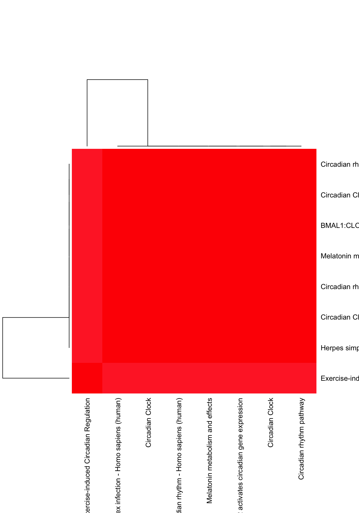
column_sum_1 <- apply(abs_tmat, 2, function(x) return(quantile(x, 0.7)))
names <- dimnames(person_tissue_genes)[[3]][order(column_sum_1, decreasing = TRUE)[1:100]]
write.table(names, file = "../utilities/circadian_genes_2.txt", quote = FALSE, row.names = FALSE, col.names = FALSE)
ensembl = biomaRt::useMart("ensembl", dataset="hsapiens_gene_ensembl", host="www.ensembl.org")
res = biomaRt::getBM(attributes = c("chromosome_name", "ensembl_gene_id", "external_gene_name", "description"), filters = c("ensembl_gene_id"), values = names,
mart = ensembl)
out <- mygene::queryMany(names, scopes="ensembl.gene", fields=c("name", "summary"), species="human");## Finished
## Pass returnall=TRUE to return lists of duplicate or missing query terms.names## [1] "ENSG00000133794" "ENSG00000132326" "ENSG00000159208"
## [4] "ENSG00000120254" "ENSG00000174738" "ENSG00000151376"
## [7] "ENSG00000164308" "ENSG00000204248" "ENSG00000272782"
## [10] "ENSG00000255513" "ENSG00000250379" "ENSG00000158717"
## [13] "ENSG00000214706" "ENSG00000144485" "ENSG00000168397"
## [16] "ENSG00000090975" "ENSG00000214078" "ENSG00000171806"
## [19] "ENSG00000270028" "ENSG00000093072" "ENSG00000131797"
## [22] "ENSG00000013573" "ENSG00000257122" "ENSG00000168255"
## [25] "ENSG00000261691" "ENSG00000166762" "ENSG00000131591"
## [28] "ENSG00000170727" "ENSG00000233961" "ENSG00000126368"
## [31] "ENSG00000138449" "ENSG00000105245" "ENSG00000188554"
## [34] "ENSG00000160271" "ENSG00000270659" "ENSG00000258451"
## [37] "ENSG00000249572" "ENSG00000199785" "ENSG00000137802"
## [40] "ENSG00000103942" "ENSG00000176125" "ENSG00000234028"
## [43] "ENSG00000163795" "ENSG00000004660" "ENSG00000105516"
## [46] "ENSG00000072071" "ENSG00000007376" "ENSG00000108733"
## [49] "ENSG00000101194" "ENSG00000261971" "ENSG00000178623"
## [52] "ENSG00000133275" "ENSG00000171503" "ENSG00000179021"
## [55] "ENSG00000167074" "ENSG00000179094" "ENSG00000182173"
## [58] "ENSG00000223774" "ENSG00000213390" "ENSG00000100058"
## [61] "ENSG00000130772" "ENSG00000127415" "ENSG00000214562"
## [64] "ENSG00000198598" "ENSG00000008405" "ENSG00000168209"
## [67] "ENSG00000166135" "ENSG00000183682" "ENSG00000110799"
## [70] "ENSG00000103326" "ENSG00000255717" "ENSG00000169385"
## [73] "ENSG00000243749" "ENSG00000269926" "ENSG00000155324"
## [76] "ENSG00000272949" "ENSG00000254860" "ENSG00000177453"
## [79] "ENSG00000204775" "ENSG00000214425" "ENSG00000214401"
## [82] "ENSG00000178921" "ENSG00000172409" "ENSG00000270081"
## [85] "ENSG00000174100" "ENSG00000213923" "ENSG00000203602"
## [88] "ENSG00000128973" "ENSG00000055483" "ENSG00000238198"
## [91] "ENSG00000174996" "ENSG00000092199" "ENSG00000049246"
## [94] "ENSG00000188312" "ENSG00000131931" "ENSG00000103253"
## [97] "ENSG00000105771" "ENSG00000167962" "ENSG00000215190"
## [100] "ENSG00000177764"circadian <- read.delim("../utilities/circadian_pathways_2.tab")
cbind.data.frame(circadian$q.value, circadian$pathway, circadian$members_input_overlap_geneids)## circadian$q.value circadian$pathway
## 1 5.231518e-08 Circadian rhythm - Homo sapiens (human)
## 2 5.231518e-08 BMAL1-CLOCK,NPAS2 activates circadian gene expression
## 3 5.231518e-08 Circadian rhythm pathway
## 4 5.563338e-08 Circadian Clock
## 5 6.122722e-08 BMAL1:CLOCK,NPAS2 activates circadian gene expression
## 6 3.714580e-07 Circadian Clock
## 7 5.877847e-07 Melatonin metabolism and effects
## 8 2.325424e-04 Exercise-induced Circadian Regulation
## 9 3.819026e-02 Circadian entrainment - Homo sapiens (human)
## 10 4.441017e-02 Pyruvate metabolism
## circadian$members_input_overlap_geneids
## 1 8863; 8864; 1454; 5187; 9572; 1407
## 2 8864; 5187; 1628; 9572; 1407
## 3 5187; 1454; 9572; 1407; 8864
## 4 1454; 1628; 8864; 1407; 5187; 9572
## 5 9572; 5187; 8864; 1628; 1407
## 6 8864; 5187; 9572; 1407
## 7 8864; 1407; 8863; 5187; 1454
## 8 8864; 9975; 1407; 5187
## 9 5187; 8863; 8864
## 10 10873; 84264The pathway heatmap in this case
pathway2 <- read.delim("../utilities/circadian_pathways_2.tab")
if(length(which(pathway2$q.value < 0.05)) > 2){
pathway2 <- pathway2[which(pathway2$q.value < 0.05),]
}
maxpath = 75
pathway <- pathway2[1:min(maxpath, dim(pathway2)[1]), ]
ensembl_genes <- pathway$members_input_overlap
pathway_list_genes <- sapply(ensembl_genes, function(x) return(strsplit(as.character(x), "; ")))
all_genes <- Reduce(union, pathway_list_genes)
pathway_mat <- matrix(0, length(pathway_list_genes), length(all_genes))
for(l in 1:dim(pathway_mat)[1]){
pathway_mat[l, match(pathway_list_genes[[l]], all_genes)] <- 1
}
pathway_bimat <- (pathway_mat)%*%t(pathway_mat)
pathway_bimat_prop <- diag(1/sqrt(diag(pathway_bimat)), dim(pathway_bimat)[1]) %*% pathway_bimat %*% diag(1/sqrt(diag(pathway_bimat)), dim(pathway_bimat)[1])
col=c(rev(rgb(seq(1,0,length=1000),1,seq(1,0,length=1000))),
rgb(1,seq(1,0,length=1000),seq(1,0,length=1000)))
heatmap(pathway_bimat_prop, labRow = pathway$pathway, labCol = pathway$pathway, cexRow = 1, cexCol = 1, col = col, zlim = c(-1,1),
scale = "none", margins = c(5, 5))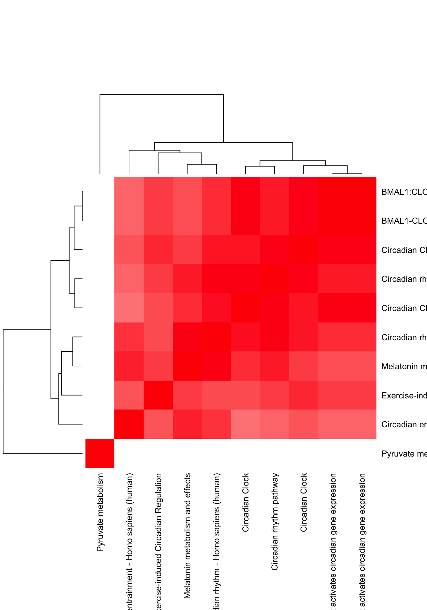
The plots of the t-scores for some of the genes which we know are part of the Circadian rthym.
pathways <- read.delim("../utilities/CPDB_pathways_genes.tab")
pathway_names <- pathways[,1]
grep("Circadian", pathway_names)## [1] 139 162 1165 1396 1513 2452 4090circadian_pathways <- pathways[grep("Circadian", pathway_names),]
gene_ids <- circadian_pathways[,4]
circadian_rhythm_genes_pre <- gene_ids[2]
circadian_clock_genes_pre <- gene_ids[3]circadian_clock_genes <- strsplit(as.character(circadian_clock_genes_pre), "[,]")[[1]]
circadian_rhythm_genes <- strsplit(as.character(circadian_rhythm_genes_pre), "[,]")[[1]]Plots of the t-scores for the circadian clock genes and the circadian rthym genes.
clock_indices <- match(circadian_clock_genes, dimnames(person_tissue_genes)[[3]])
clock_indices <- clock_indices[!is.na(clock_indices)]par(mfrow=c(3,3))
for(j in 1:length(clock_indices)){
plot(tmat[,clock_indices[j]], pch=20, cex=1, ylim=c(-3, 3),
ylab =paste0(dimnames(person_tissue_genes)[[3]][clock_indices[j]]))
abline(0,0)
}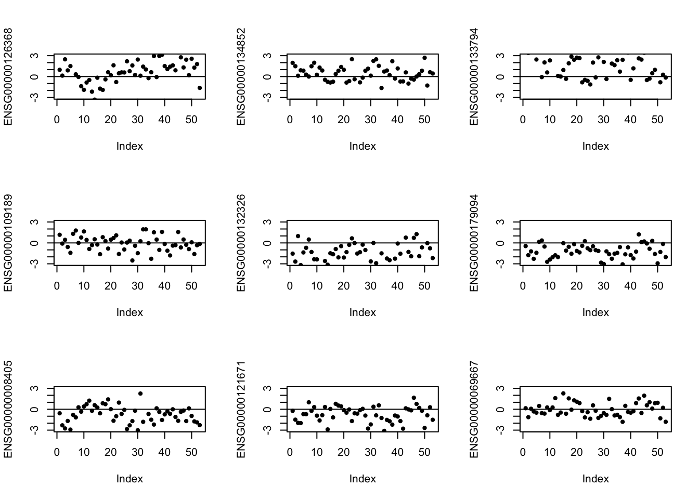
rhythm_indices <- match(circadian_rhythm_genes, dimnames(person_tissue_genes)[[3]])
rhythm_indices <- rhythm_indices[!is.na(rhythm_indices)]par(mfrow=c(3,3))
for(j in 1:length(rhythm_indices)){
plot(tmat[,rhythm_indices[j]], pch=20, cex=1, ylim=c(-3, 3),
ylab =paste0(dimnames(person_tissue_genes)[[3]][rhythm_indices[j]]))
abline(0,0)
}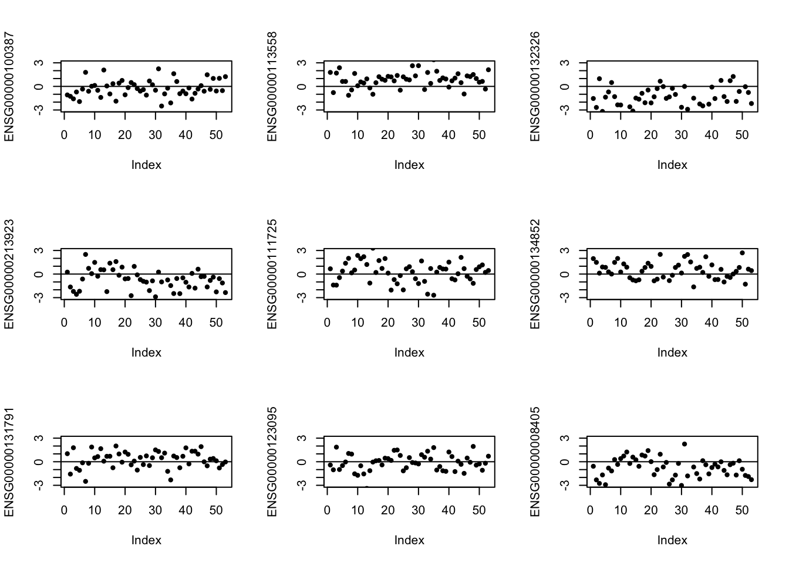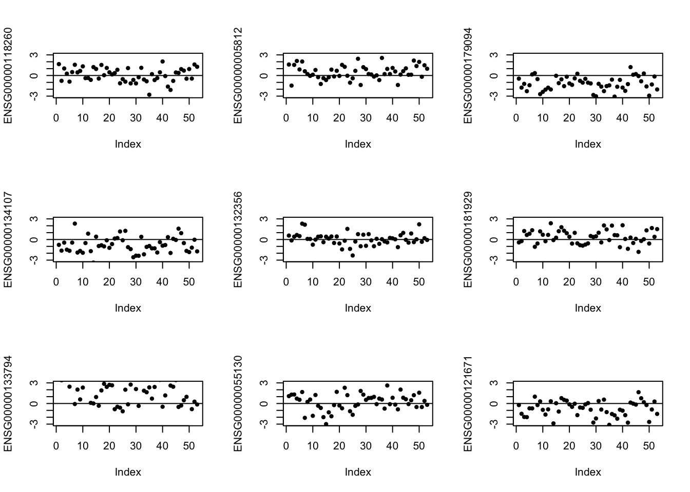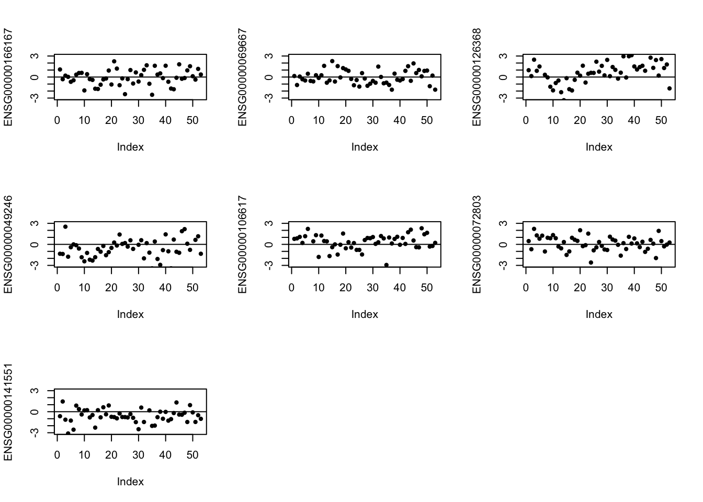
The top t-score values we checked for out pathway analysis, we see how the scatter plots look like for them.
our_indices <- order(column_sum_1, decreasing = TRUE)[1:25]
dimnames(person_tissue_genes)[[3]][our_indices]## [1] "ENSG00000133794" "ENSG00000132326" "ENSG00000159208"
## [4] "ENSG00000120254" "ENSG00000174738" "ENSG00000151376"
## [7] "ENSG00000164308" "ENSG00000204248" "ENSG00000272782"
## [10] "ENSG00000255513" "ENSG00000250379" "ENSG00000158717"
## [13] "ENSG00000214706" "ENSG00000144485" "ENSG00000168397"
## [16] "ENSG00000090975" "ENSG00000214078" "ENSG00000171806"
## [19] "ENSG00000270028" "ENSG00000093072" "ENSG00000131797"
## [22] "ENSG00000013573" "ENSG00000257122" "ENSG00000168255"
## [25] "ENSG00000261691"par(mfrow=c(3,3))
for(j in 1:length(our_indices)){
plot(tmat[,our_indices[j]], pch=20, cex=1, ylim=c(-3, 3),
ylab =paste0(dimnames(person_tissue_genes)[[3]][our_indices[j]]))
abline(0,0)
}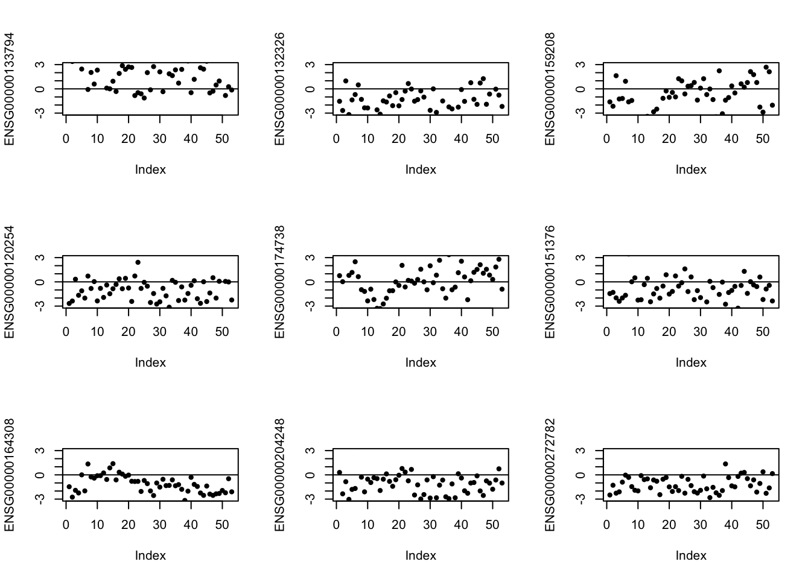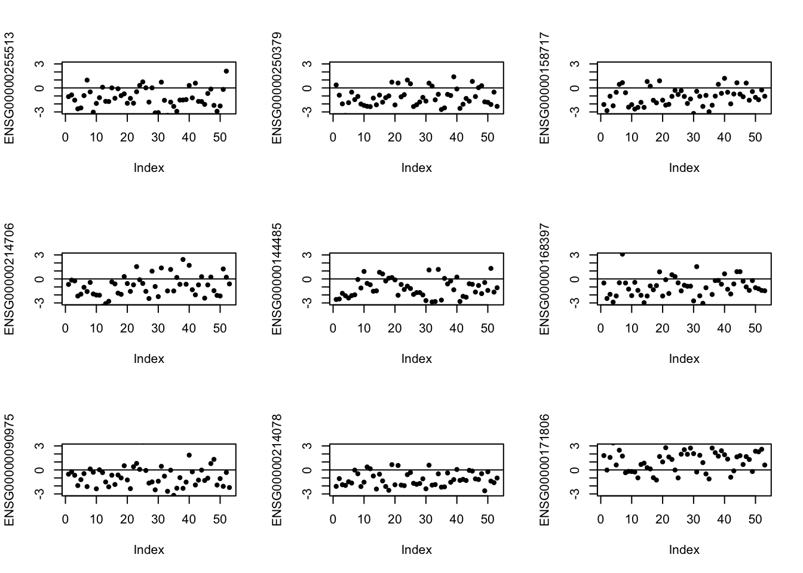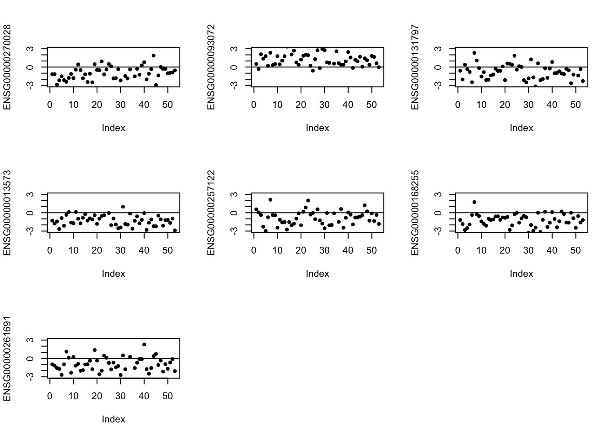
How does a random set of 25 genes look like in its patterns across the tissues.
random_indices <- sample(1:16069, 25, replace=FALSE)
par(mfrow=c(3,3))
for(j in 1:length(random_indices)){
plot(tmat[,random_indices[j]], pch=20, cex=1, ylim=c(-3, 3),
ylab =paste0(dimnames(person_tissue_genes)[[3]][random_indices[j]]))
abline(0,0)
}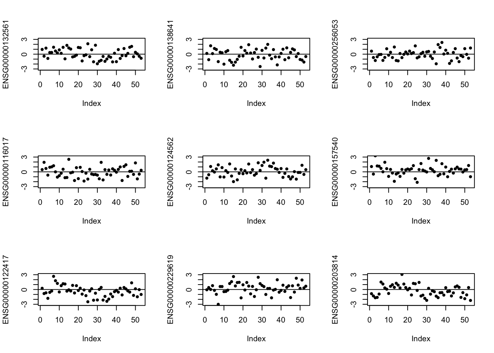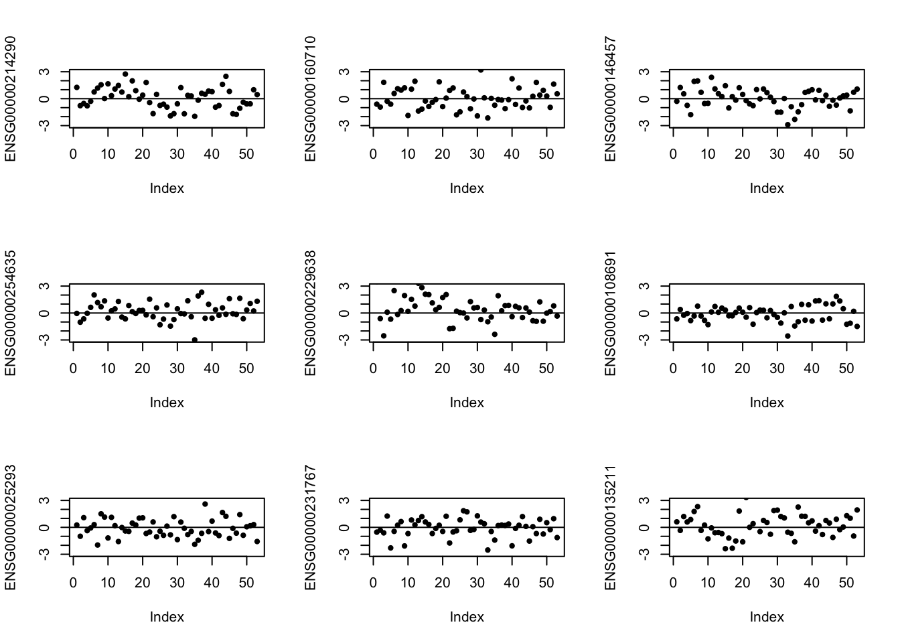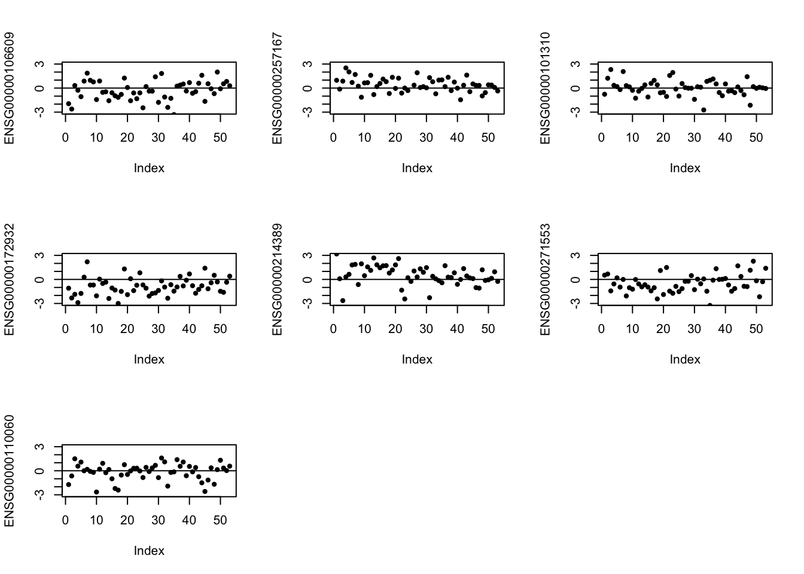
This R Markdown site was created with workflowr